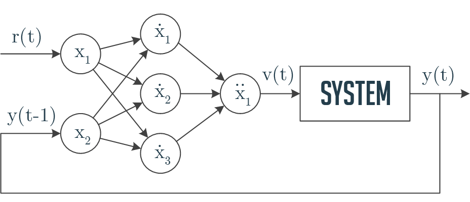
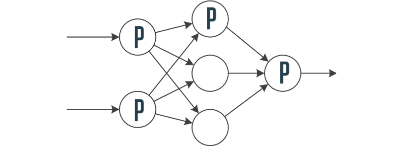
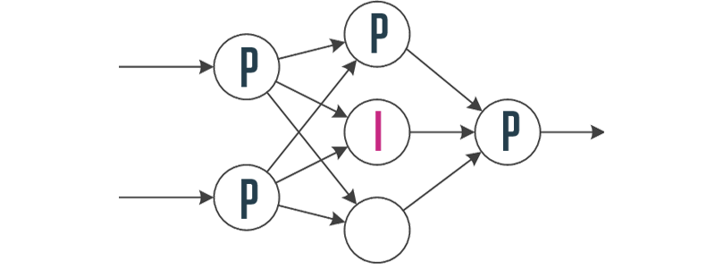
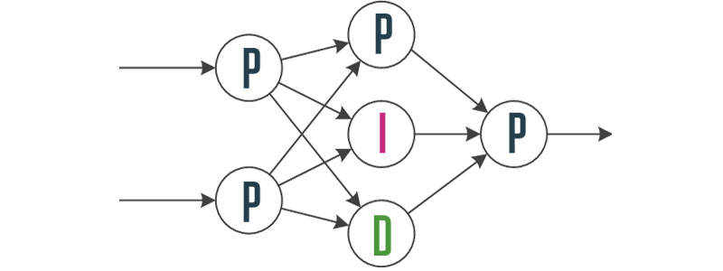

Error Propagation
 $$ w_i(n+1) = w_i(n) - \eta \frac{\partial J}{\partial w_i}$$
$$ w_i(n+1) = w_i(n) - \eta \frac{\partial J}{\partial w_i}$$
Controller takes target value $r(t)$ and feedback $y(t)$ and produces system input $v(t)$. System generates new output $y(t)$, which is used as a feedback.
Controller based on a neural network with 2-3-1 structure 
 P-neuron transfer function: $$ x(t) = \begin{cases} -1 & u(t) < -1 \\ u(t) & -1 \le u(t) \le 1 \\ 1 & u(t) > 1 \end{cases}$$ $u(t)$ — neuron input, $x(t)$ — neuron output
 I-neuron transfer function: $$ x(t) = \begin{cases} -1 & x(t) < -1 \\ x(t-1)+u(t) & -1 \le x(t) \le 1 \\ 1 & x(t) > 1 \end{cases}$$ $x(t-1)$ — previous output
 D-neuron transfer function: $$ x(t) = \begin{cases} -1 & x(t) < -1 \\ u(t)-u(t-1) & -1 \le x(t) \le 1 \\ 1 & x(t) > 1 \end{cases}$$ $u(t-1)$ — previous input
The aim of PIDNN controller is to minimize: $$ J = \sum\limits_{t=1}^N E_t = \frac{1}{N} \sum\limits_{t=1}^N(r(t) - y(t))^2 $$
$r(t)$ — desired system output
$y(t)$ — real system output (feedback)
$N$ — number of samples
$$ w_i(n+1) = w_i(n) - \eta \frac{\partial J}{\partial w_i}$$
$$ \frac{\partial J}{\partial w_i} \approx -\frac{2}{N} \sum\limits_{t=1}^N (r(t) - y(t)) \frac{y(t)-y(t-1)}{v(t)-v(t-1)} \dot{x}_i(t) $$
$$ \frac{\partial J}{\partial w_ij} \approx -\sum\limits_{t=1}^N \delta(t)\frac{\dot{x}_j(t)-\dot{x}_j(t-1)}{\dot{u}_j(t)-\dot{u}_j(t-1)} w_j x_i(t) $$
/
#